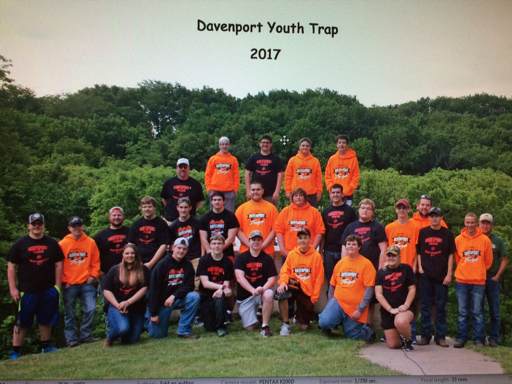

Davenport Youth Trap club was started in 2009 by coach Gill and coach Belz and has been growing ever since.
Trapshooting has been around for many years and is a great sport to get into. Trap is a humbling sport; you have to have a clear mind to be able to shoot correctly. If you don’t follow the basic tips for shooting you will not be able to do well because the little things matter. Trap is a growing sport for both males and females.